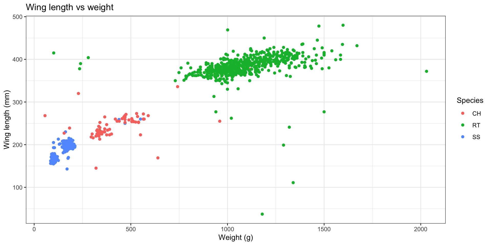
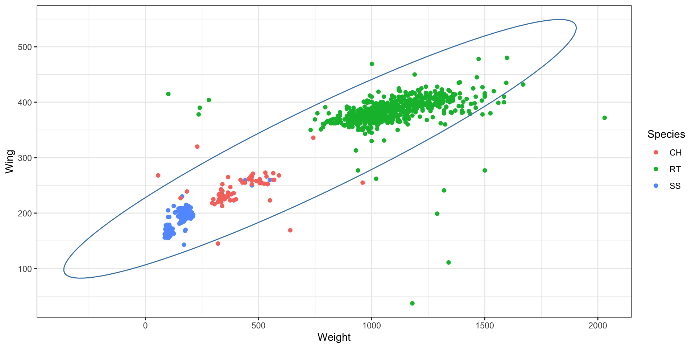
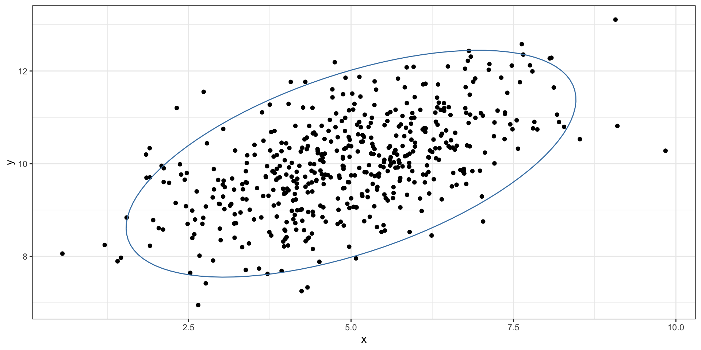
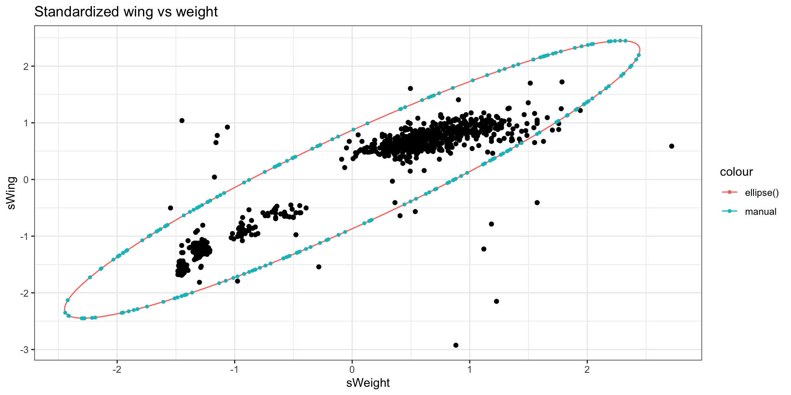
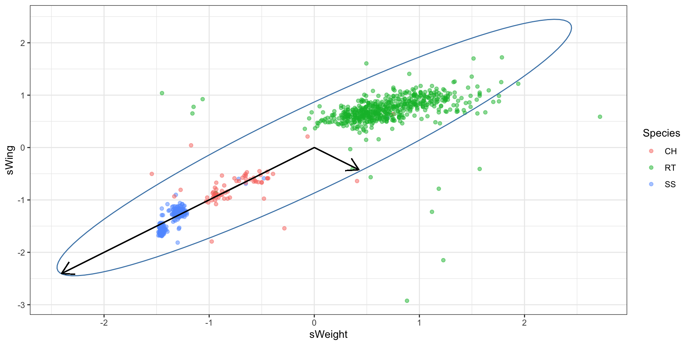
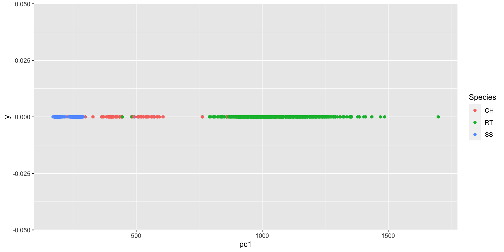
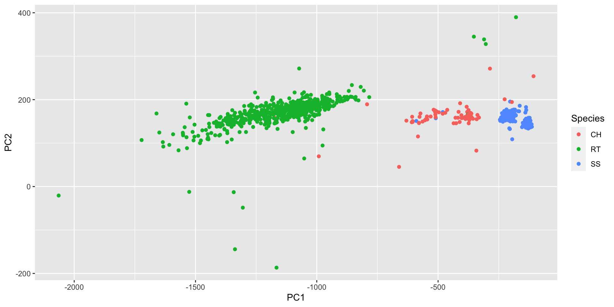

x = c(1, 2, 3, 4, 5)
y = c(0.5, 3, 2.2, 5, 5.5)Covariance and Principal Components
Announcements
Reminder:
- Final project presentations during lab Tuesday, April 25.
Covariance
Covariance and correlation
Empirical covariance between two variables
\[ cov(X,Y) = \frac{1}{n-1} \sum_{i = 1}^{n} (x_i - \bar{x})(y_i - \bar{y}) \]
Empirical correlation between two variables,
\[ \rho_{XY} = \frac{cov(X,Y)}{\sigma_X \sigma_Y} \]
where \(\sigma_X\) and \(\sigma_Y\) are the standard deviation of X and Y respectively.
. . .
Notice that the correlation matrix is just the covariance matrix of the standardized data.
Easy to see from definition of covariance
\[ cov(X, Y) = \mathbb{E} [(X - \mathbb{E}[X] ) (Y - \mathbb{E}[Y])] \]
cov and cor demo
# covariance
cov(x, y)[1] 3# correlation
cor(x, y)[1] 0.9243906# covariance of standardized variables
xs = (x - mean(x)) / sd(x)# x-standardized
ys = (y - mean(y)) / sd(y)# y-standardized
cov(xs, ys)[1] 0.9243906d = data.frame(x = x, y = y)
cov(d) x y
x 2.5 3.000
y 3.0 4.213d = data.frame(x = x, y = y)
cor(d) x y
x 1.0000000 0.9243906
y 0.9243906 1.0000000Data
Hawks is a subset of a data set by the same name in the Stat2Data package. Today we will focus on the following measurements of 891 hawks:
Species: CH = cooper’s, RT = red-tailed, SS = sharp-shinnedWeight: body weight in gramsWing: length in mm of primary wing feather from tip to wrist it attaches toCulmen: length in mm of the upper bill from the tip to where it bumps into the fleshy part of the birdHallux: length in mm of the killing talon
Hawks = read_csv("https://sta101-fa22.netlify.app/static/appex/data/Hawks.csv")glimpse(Hawks)Rows: 891
Columns: 5
$ Species <chr> "RT", "RT", "CH", "SS", "RT", "RT", "RT", "RT", "RT", "RT", "R…
$ Weight <dbl> 920, 990, 470, 170, 1090, 960, 855, 1210, 1120, 1010, 1010, 11…
$ Wing <dbl> 385, 381, 265, 205, 412, 370, 375, 412, 405, 393, 371, 390, 41…
$ Culmen <dbl> 25.7, 26.7, 18.7, 12.5, 28.5, 25.3, 27.2, 29.3, 26.0, 26.3, 25…
$ Hallux <dbl> 30.1, 31.3, 23.5, 14.3, 32.2, 30.1, 30.0, 31.3, 30.2, 30.8, 29…Visualizing covariance
Let’s look at hawk weight and wing length.

# Covariance matrix
covMatrix1 = Hawks %>%
select(Weight, Wing) %>%
cov()
covMatrix1 Weight Wing
Weight 214310.57 41247.975
Wing 41247.97 9085.273
The mathematics of the covariance ellipsoid
Covariance matrix \(\Sigma\) collects variances and covariances together,
\[ \Sigma = \begin{pmatrix}\sigma_x^2 & \sigma_{xy}^2\\\ \sigma_{xy}^2 & \sigma_y^2\end{pmatrix} \]
How can we visualize the covariance matrix above?
The “matrix inverse” helps. The inverse of \(\Sigma\) is denoted \(\Sigma^{-1}\). The property of the inverse is:
\[ \Sigma^{-1} \Sigma = \begin{pmatrix}1 & 0\\\ 0 & 1 \end{pmatrix} \]
We can visualize the covariance matrix by forming the quadratic,
\[ z^T \Sigma^{-1} z = c^2, \]
where \(z = (x, y)\) and \(\Sigma^{-1} = \begin{pmatrix}s_x^2 & s_{xy}^2\\\ s_{xy}^2 & s_y^2\end{pmatrix}\). Where have we seen this before? Hint: see multivariate normal
Notice the linear equations
By multiplying out the product in scalar notation
\[ \begin{pmatrix} x & y\end{pmatrix} \begin{pmatrix}s_x^2 & s_{xy}^2\\\ s_{xy}^2 & s_y^2\end{pmatrix} \begin{pmatrix} x\\\ y \end{pmatrix} = c^2 \]
\[ (x s_x^2 + y s_{xy}^2 \ \ \ \ x s_{xy}^2 + y s_y^2) \begin{pmatrix} x\\\ y \end{pmatrix} = c^2 \]
\[ x^2 s_x^2 + 2x y \cdot s_{xy}^2 + y^2 s_y^2 = c^2 \]
This is the equation of an ellipse where our choice of \(c\) defines the size of the ellipse.
Connection: MVN
library(mvtnorm)
set.seed(1)
mu = c(5, 10)
sigma = matrix(data = c(2, .8, .8, 1), ncol = 2, nrow = 2)
points = rmvnorm(n = 500,
mean = mu,
sigma = sigma)
d = tibble(x = points[,1],
y = points[,2])
d %>%
head(n = 5)# A tibble: 5 × 2
x y
<dbl> <dbl>
1 4.20 9.96
2 4.41 11.2
3 5.17 9.34
4 5.92 10.9
5 5.68 9.91
ellipsePoints = data.frame(ellipse(sigma))
ellipsePoints["x"] = ellipsePoints["x"] + mu[1]
ellipsePoints["y"] = ellipsePoints["y"] + mu[2]
d %>%
ggplot(aes(x = x, y = y)) +
geom_point() +
theme_bw() +
geom_path(aes(x = x, y = y), data = ellipsePoints,
color = 'steelblue')What \(c\) was used?
?ellipse has the answer… \(c^2 \approx 6\) for 2-d variables.
qchisq(0.95, 2)[1] 5.991465Exercise
Perform a sanity check. Plot the ellipse manually using the formula from a previous slide and using \(c^2\) = 6. To avoid having to re-center on the centroid, you can standardize the data.
Hawks2 = Hawks %>%
mutate(sWeight = (Weight - mean(Weight)) / sd(Weight),
sWing = (Wing - mean(Wing)) / sd(Wing))
covMatrix2 = Hawks2 %>%
select(sWeight, sWing) %>%
cov()
covMatrix2 sWeight sWing
sWeight 1.0000000 0.9347852
sWing 0.9347852 1.0000000Next, get \(\Sigma^{-1}\):
solve(covMatrix2) sWeight sWing
sWeight 7.925401 -7.408548
sWing -7.408548 7.925401Next, we manually solve the quadratic equation using the quadratic formula (set \(c^2 = 6\))
\[ x^2 s_x^2 + 2x y \cdot s_{xy}^2 + y^2 s_y^2 = 6 \]
sx = 7.925401
sxy = -7.408548
sy = 7.925401
f = function(x) {
A = sy
B = 2 * x * sxy
C = (x * x * sx) - 6
(-B + sqrt(B^2 - (4* A * C))) / (2 * A)
}
f2 = function(x) {
A = sy
B = 2 * x * sxy
C = (x * x * sx) - 6
(-B - sqrt(B^2 - (4* A * C))) / (2 * A)
}
set.seed(1)
# Grab the points (x,y) that satisfy the equation
ellipsePoints = data.frame(ellipse(covMatrix2))
m1 = data.frame(x = seq(-3, 3, by = 0.001)) %>%
mutate(y = f(x)) %>%
filter(!is.nan(y))
m2 = m1 %>%
mutate(y = f2(x)) %>%
filter(!is.nan(y))
manualEllipsePoints = rbind(m1, m2) %>%
slice_sample(n = 200)
Hawks2 %>%
ggplot(aes(x = sWeight, y = sWing)) +
geom_point() +
theme_bw() +
geom_path(aes(x = sWeight, y = sWing,
color = "ellipse()"), data = ellipsePoints) +
geom_point(aes(x = x, y = y, color = "manual"),
data = manualEllipsePoints, alpha = 1,
size = 1,) +
labs(title = "Standardized wing vs weight")Principal components
Principal components
The axes of the ellipse provide the most informative directions to measure the data. In \(n\)-dimensions, where we have a \(n\)-dimensional ellipsoid, it can be useful to look at \(p<n\) axes. The largest axis is called the “first” principal component. The second largest axis is called the “second” principal component and so on.

Compute principal components
# get PCs
Hawks %>%
select(Weight, Wing) %>%
prcomp(scale = TRUE)Standard deviations (1, .., p=2):
[1] 1.3909656 0.2553718
Rotation (n x k) = (2 x 2):
PC1 PC2
Weight -0.7071068 0.7071068
Wing -0.7071068 -0.7071068
# make plot
Hawks %>%
mutate(pc1 = (0.7071068 * Weight) + (0.7071068 * Wing)) %>%
ggplot(aes(x = pc1, y = 0, color = Species)) +
geom_point()PCA summary
“Principal components” refers to the ranked orthogonal axes of the ellipsoid generated from the covariance matrix of the data.
The components are ranked largest to smallest.
PCA is a dimension-reduction technique. Often we examine the first 1 to 3 principal components to create visualizations of high-dimensional data.
What we gain in simplicity we often lose in interpretability. The ‘dimensions’ that capture the maximum variability of the data are created from linear combinations of the variables. These linear combinations are often difficult to interpret / motivate.
Higher dimensional example

hpc = Hawks %>%
select(Weight, Wing, Culmen, Hallux) %>%
prcomp(scale = FALSE) %>%
.["rotation"] %>%
as.data.frame() %>%
setNames(., paste0("PC", seq(4)))
# explicitly mapping
Hawks %>%
mutate(PC1 = (hpc$PC1[1] * Weight) +
(hpc$PC1[2] * Wing) +
(hpc$PC1[3] * Culmen) +
(hpc$PC1[4] * Hallux),
PC2 = (hpc$PC2[1] * Weight) +
(hpc$PC2[2] * Wing) +
(hpc$PC2[3] * Culmen) +
(hpc$PC2[4] * Hallux)) %>%
ggplot(aes(x = PC1, y = PC2, color = Species)) +
geom_point()Further reading
This lecture is inspired by
For further reading on principal component analysis in action, see
Novembre, John, et al. “Genes mirror geography within Europe.” Nature 456.7218 (2008): 98-101.
and an associated news article discussing the work.